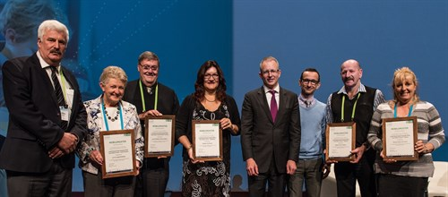
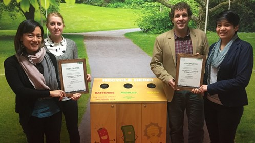

LATEST NEWS
MobileMuster's Recycling Awards Celebrate Top Councils
Posted June 21, 2016
MobileMuster, the mobile telecommunications industry’s official recycling scheme, is proud to announce the winners of the 2016 Local Government Recycling Awards.
Presented by Hon Paul Fletcher MP, Minister for Major Projects, Territories and Local Government at the National General Assembly of Local Government in Canberra where eight councils from across Australia were recognised as Australia’s top recyclers.
at the National General Assembly of Local Government in Canberra where eight councils from across Australia were recognised as Australia’s top recyclers.
The following councils took out top honours in the awards ceremony:
- National Top Collector (kg) – City of Sydney (NSW)
- National Top Collector per Capita – District Council of Orroroo-Carrieton (SA)
- State Top Collector (kg) – New South Wales - City of Sydney
- Territory Top Collector (kg) – Northern Territory – Alice Springs Town Council
- State Top Collector (kg) – Queensland - Brisbane City Council
- State Top Collector (kg) – Western Australia – Mindarie Regional Council
- State Top Collector (kg) – South Australia – City of Onkaparinga
- State Top Collector (kg) – Tasmania - Break O’Day Council
- State Top Collector (kg) – Victoria - Moonee Valley City Council

Image credit (left to right): Deputy Mayor Jamie de Brenni (Alice Springs Town Council), Mayor Lorraine Rosenberg (Onkaparinga City Council), Mayor Damien Ryan (Alice Springs Town Council), Cr Kim Marx (Brisbane City Council), the Hon Paul Fletcher MP (Minister for Major Projects, Territories and Local Government), Spyro Kalos (Manager, Recycling MobileMuster), Mayor Mick Tucker (Break O'Day Council), Mayor Andrea Surace (City of Moonee Valley).
From the Northern Peninsula Council located at the northern most point of Australia to the Huon Valley Council situated in southern Tasmania, MobileMuster partners with over 360 local councils around Australia to promote and collect mobile phones for recycling.
Spyro Kalos, Recycling Manager, MobileMuster, said: “Councils play a major role in helping us educate and provide convenient drop-off locations within their community.”
Over the past decade local government partners have helped recycle thousands of tonnes valuable resources with over 90 per cent of the materials in mobile phones being recovered.
“Our local government partners have collected nearly 30 tonnes of mobiles phone components for recycling including approximately 158,000 handsets, 210,000 batteries and 10,700kg of accessories since 2007.”
“In the 12 months to April 2016 alone, local councils increased their collections and recycled over 3,640kgs of mobiles, batteries, chargers and accessories with MobileMuster” said Kalos.
“However, with an estimated 25.5 million old mobile phones sitting in drawers either broken or unused around Australia, there is a lot of potential e-waste that could end up in landfill if not recycled,” said Kalos.
If your council doesn’t currently participate in the MobileMuster program and is interested in getting involved visit our council page or call 1800 249 113. Once registered MobileMuster can provide you with free collection units tailored for admin centres, libraries and waste transfer sites, plus resources to promote the program.

Image credit: The winning City of Sydney team Jackie Kuek, Brooke Weekes, Hal Dobbins and Carmel Reyes (left to right) with their integrated recycling stations that collect mobile phones, batteries and ligh bulbs.